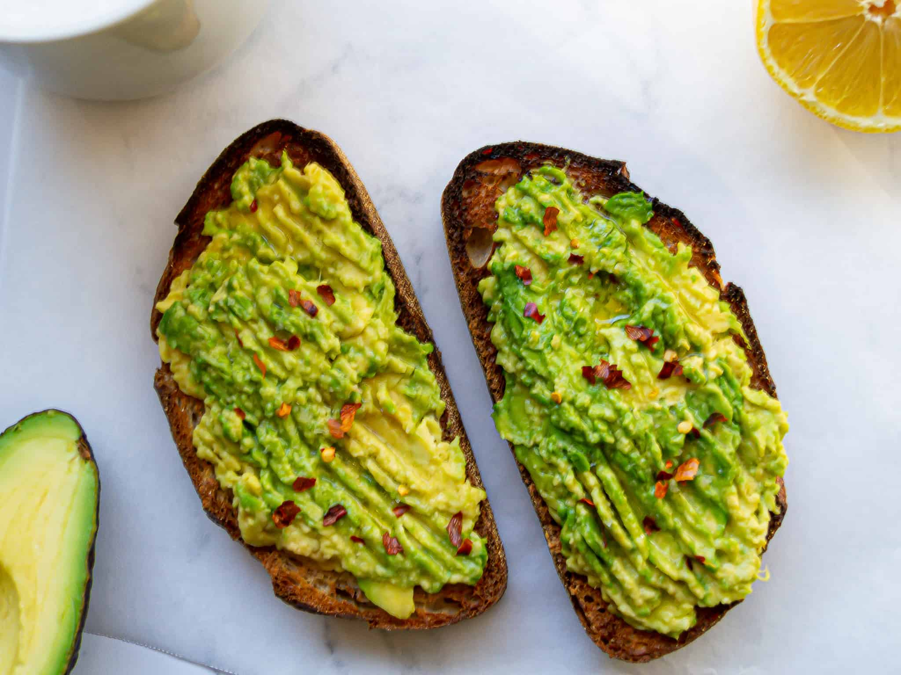

Avocado Toast

Avocado toast is delicious as a simple breakfast, snack or light meal!
Ingredients
- Avocado
- Sourdough bread
- Lemon
- Chili
- Extra virgin olive oil
Steps
- Cut the avocado in half and carefully remove its stone, then scoop out the flesh into a bowl.
- Squeeze in the lemon juice then mash with a fork to your desired texture.
Season to taste with sea salt, black pepper and chilli flakes.
- Toast your bread, drizzle over the oil then pile the avocado on top.
Home